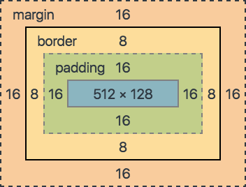
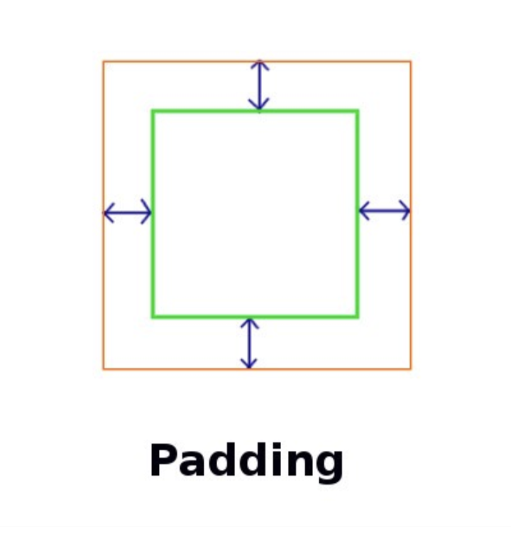
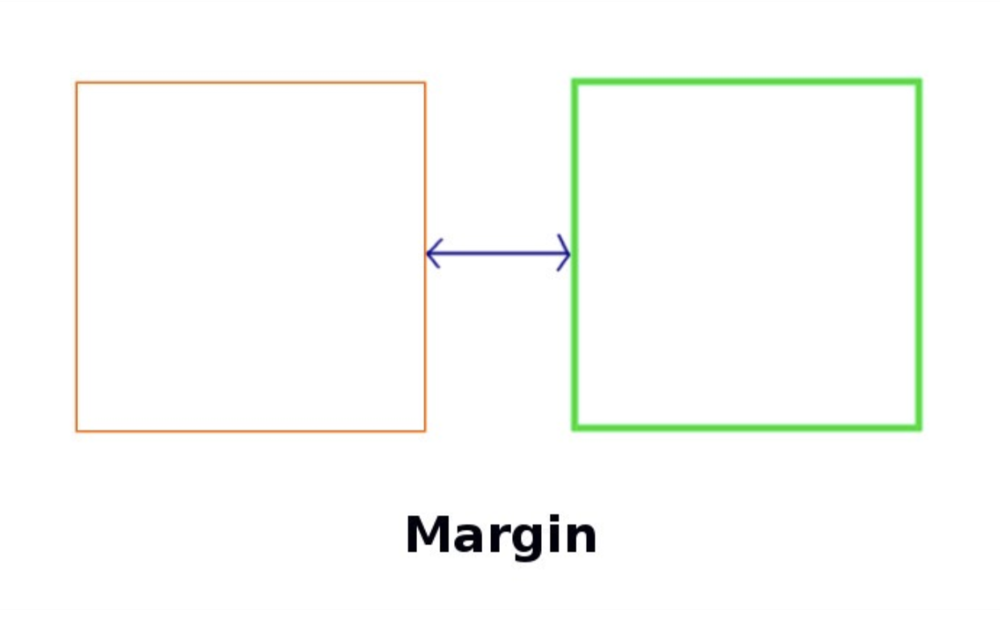
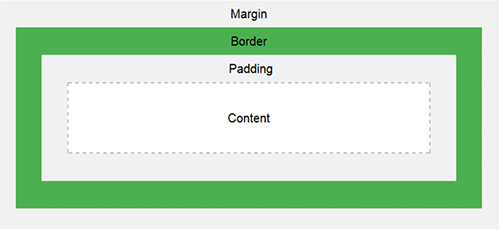
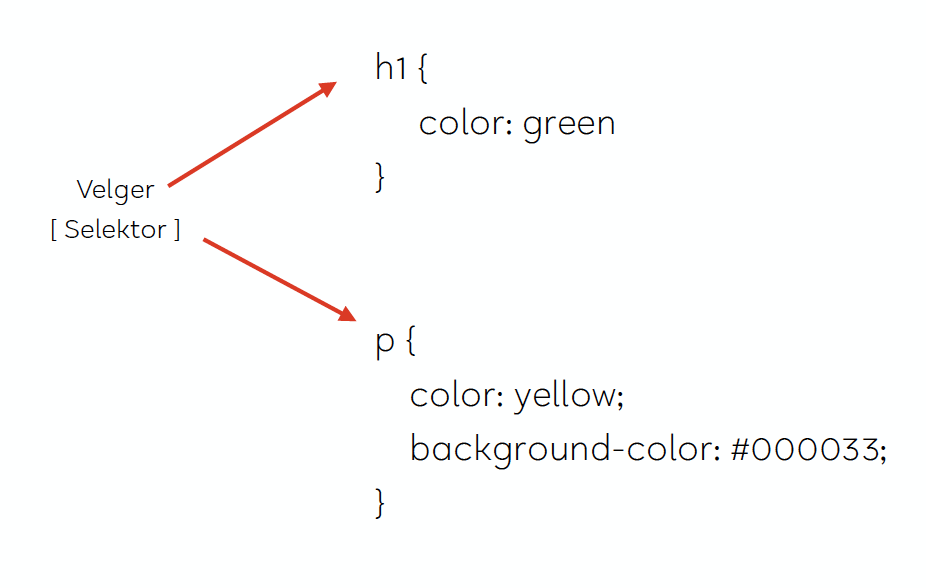
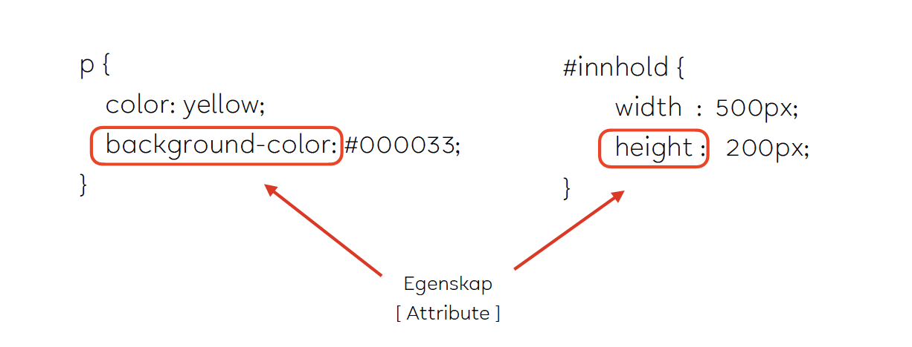

CSS-boksmodellen
Boksmodellen består av innholdet, padding, border og margin.
Padding
Luft inni boksen, rundt teksten. Denne har med farge.
Margin
Margin er luft rundt innholdet. Denne luften er usynlig.
Border
Border blir som en slags stroke rundt boksen. Man kan velge størrelse og farge.
Hva er en selector?
En selector er en slags referansetag. Denne definerer hviket objekt en CSS-endring skal gjelde for.
Hva er en attribute?
En attribute er en egenskap som f.eks høyde, bredde, farge o.l. På bildet under er det satt en attribute med en verdi slik at bildet ikke blir høyere enn 150px.
Hva er en value?
Value eller verdi er som oftest det man setter etter attributen. Eksempler på dette kan være en lengde, en fargekode eller en

Hva brukes p-taggen til?
P-taggen er definisjonen på paragraph, eller mengdetekst. Akuratt slik som denne teksten du leser her.
Hva brukes h1 taggen til?
H1 er definisjonen på en hovedoverskrift, slik som den over disse boksene.
Hvordan kommenterer man i HTML?
For å kommentere skriver man < !--, da vil sluttkommandoen komme automatisk etter kommentaren du skriver.
Hvordan kommenterer man i CSS?
For å kommentere i CSS skriver du først /*, så kommentaren din, for så å avslutte med */.
Hvordan skriver man lenker?
For å skrive lenker, skriver man først a på en ny linje. Trykk enter, og sett inn ønsket url i klammene. Mellom de to neste motstående klammene setter du navnet på linken. Dette navnet er synlig på nettsiden.
Hvordan legger man til bilder?
Pass på å legge bildet du vil legge inn i mappen som html-filen ligger i. I HTML-filen skriver du «img», og trykker enter. I første «» skriver du ./ og velger bildet du skal sette inn fra mappen. I den andre «» skriver du en beskrivelse på bildet. Dette brukes til opplesning av nettsiden for svaksynte.
Hvordan legger man til bakgrunnsfarge?
Velg hvilke element du vil ha bakgrunnsfarge på. Dette kan være en paragraf, en boks, eller hele nettsiden. I style eller CSS-delen av HTML-filen setter du deretter inn < background-color: (verdi) >.
Hva brukes main til i html?
Main i HTML brukes til selve hovedinnholdet, slik som område der disse boksene er plassert.
Hvordan skriver man farge med HEX-verdi?
Skriv # og en sekssifret kombinasjon av bokstaver (a-f) og tall (0-9). 0 er mørkest og f er lysest. Da er f.eks #ffffff hvit, #000000 svart, #ffcc00 en varm gul farge og #bfe6ff en lyseblå farge.
Hvordan skriver man farge med rgb-verdi?
Skriv rgb og verdien av rød, grønn og blå du vil bruke. F.eks rgb(255, 26, 00) til å få en rød farge, rgb(139, 49, 255) for en lilla farge og rgb(255, 239, 0) for gul.
Hva brukes flexbox i CSS til?
Flexbox brukes når du skal designe layout til en nettside. Innholdet blir da mer fleksibelt og flytter på seg automatisk i forhold til skjermstørrelsen.